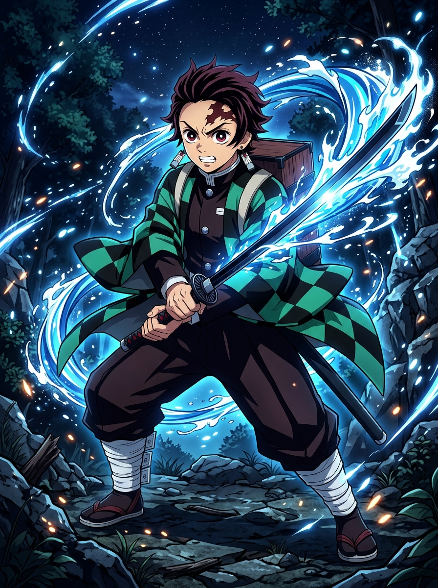
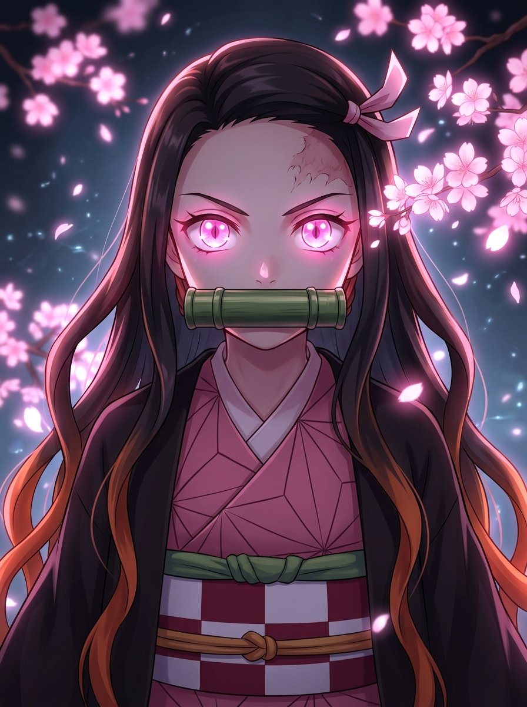
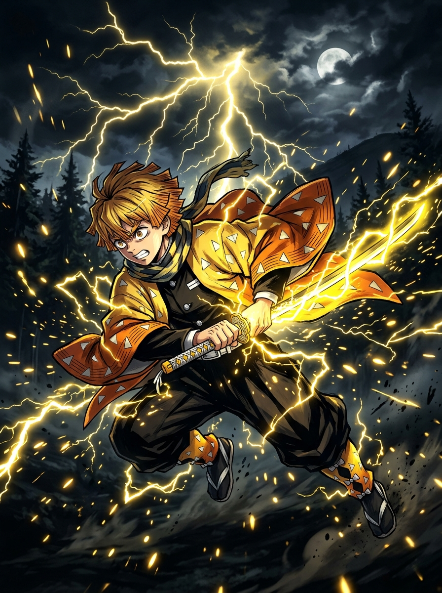
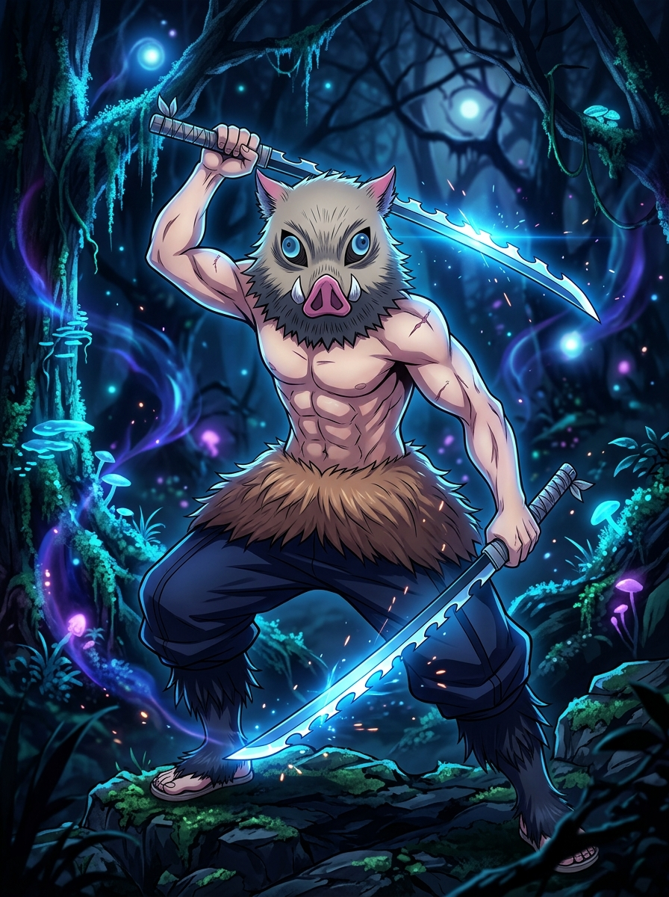

Explore o Universo
Episódios
Assista aos episódios da 1ª Temporada em alta qualidade com player integrado e controle automático.
Ver Episódios →Filmes Épicos
Confira Mugen Train (Trem Infinito) e a grandiosa batalha no Castelo Infinito.
Assistir Filmes →Conheça os Hashiras mais poderosos da obra
Conheça todos os Hashiras e suas respirações.
Saber Mais →Personagens Principais

Tanjiro Kamado
Respiração da Água & Hinokami KaguraUm jovem bondoso que se torna Caçador de Demônios para transformar sua irmã Nezuko de volta em humana.

Nezuko Kamado
Demônio ProtetorIrmã de Tanjiro que, mesmo transformada em demônio, mantém sua humanidade e luta ao lado dos caçadores.

Zenitsu Agatsuma
Respiração do TrovãoPossui um talento oculto devastador que se revela com velocidade relâmpago quando ele adormece.

Inosuke Hashibira
Respiração da FeraCriado por javalis nas montanhas, usa duas katanas serradas e possui sentidos selvagens apurados.